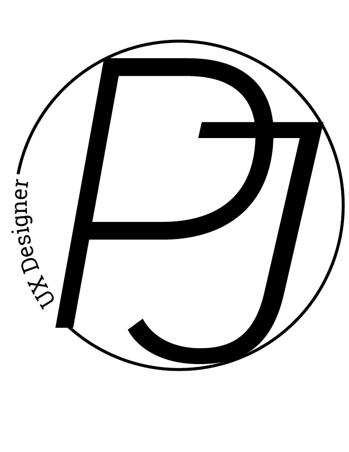
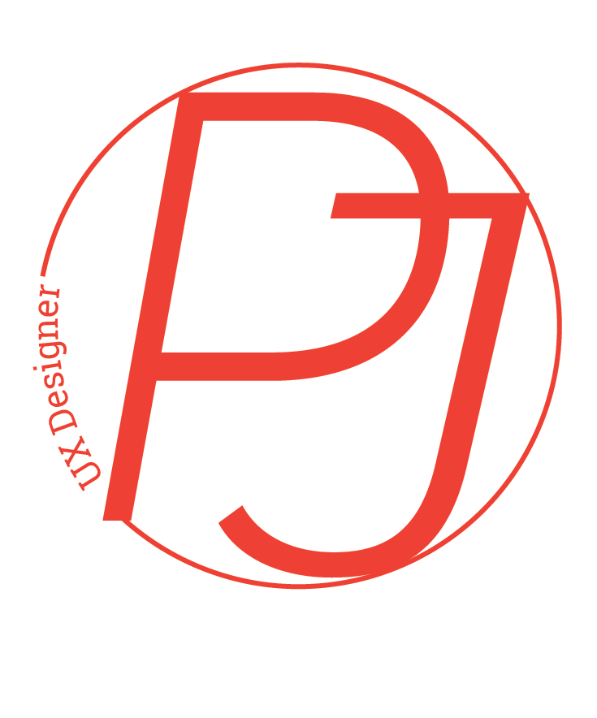
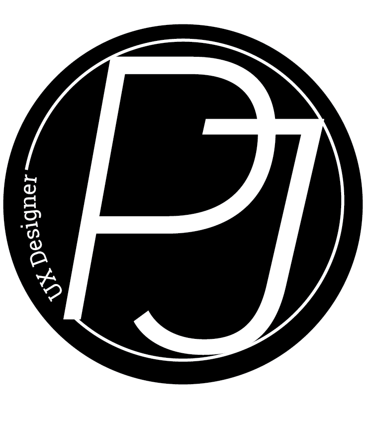

Polished Logo Designs
Favicons
Here I have included the classic black and white favicon, as well as the reverse black and white so there are different options depending on whether the background is light or dark.
Black & White
This logo is used in mediums that require contrast. It can also be used to establish a more serious tone depending on what message needs to be portrayed.
Color
This logo is for more than just aesthetic appeal. Colors help brands connect with consumers on a deeper psychological level. By selecting a brand's color palette, you also select the emotions and associations you're seeking to evoke.
Reverse
The reverse black and white can be best utilized where a darker background is being used and the white text really stands out.